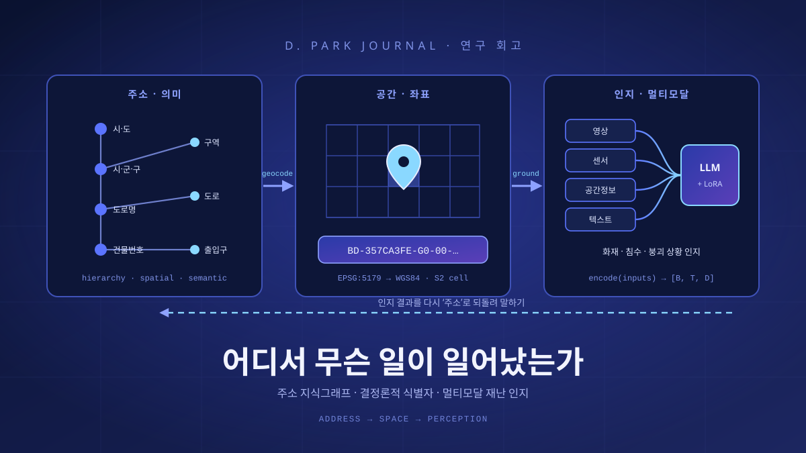

검색이 지능을 구원하는 네 가지 방법
대형언어모델의 지식은 학습이 끝나는 순간 굳어 버린다. 굳은 지식은 낡고, 출처를 감추며, 때로 그럴듯한 거짓을 지어낸다. 검색증강생성(RAG)은 모델 바깥의 문서를 끌어와 그 빈틈을 메우려는 시도다. 이 글은 검색을 떠받치는 네 가지 아키텍처 — Lexical·Semantic·Hybrid·Graph — 를 해부하고, 그것이 환각(hallucination)을 어떻게 줄이는지, 그리고 무엇이 여전히 남는지를 짚는다.

굳어 버린 지식과 외부 기억의 결합
대형언어모델은 방대한 텍스트를 삼켜 그 통계적 규칙을 수십억 개의 가중치 속에 압축한다. 이렇게 모델 안에 녹아든 지식을 파라메트릭 지식(parametric knowledge)이라 부른다. 놀랍도록 유창하지만, 이 지식에는 세 가지 구조적 약점이 있다. 첫째, 정적이다. 학습이 끝난 시점에 세상이 멈춰 버려, 그 이후의 사실을 알지 못한다. 둘째, 불투명하다. 어떤 답이 어느 문서에서 왔는지 되짚을 수 없어, 근거를 요구받으면 침묵하거나 지어낸다. 셋째, 바로 그 지어냄 — 환각(hallucination) — 이 유창함의 그림자처럼 따라붙는다. 모델은 “모른다”보다 “그럴듯한 무언가”를 더 자연스럽게 생성하도록 훈련되어 있기 때문이다.
이 세 약점을 한꺼번에 겨눈 발상이 검색증강생성(Retrieval-Augmented Generation, RAG)이다. 2020년 Lewis 등은 지식을 모델 가중치 안에만 가두지 말고, 질문이 들어올 때마다 외부 문서 집합에서 관련 조각을 검색(retrieve)해 입력에 덧붙인 뒤 답을 생성(generate)하자고 제안했다. 모델의 파라메트릭 지식에 비파라메트릭(non-parametric) 외부 기억을 결합한 것이다. 외부 문서는 언제든 갈아 끼울 수 있으니 정적이지 않고, 답에 출처를 붙일 수 있으니 불투명하지 않으며, 근거에 매인 답은 지어냄의 여지가 줄어든다.
그런데 여기서 조용히 무게중심이 옮겨 간다. 답의 품질이 모델의 지능만큼이나, 어쩌면 그 이상으로 검색기(retriever)의 품질에 달리게 되는 것이다. 관련 없는 문서를 끌어오면 모델은 그 노이즈에 휘둘리고, 정작 필요한 문서를 놓치면 여전히 지어낸다. 결국 RAG의 성패는 “언어모델을 어떻게 쓰느냐”가 아니라 “무엇을 어떻게 검색하느냐”로 수렴한다. 이 글이 검색 아키텍처 네 가지를 하나씩 뜯어보는 이유가 여기에 있다. 아래 그림은 그 넷을 한눈에 대비한 것이다.
단어를 그대로 맞추는 힘 — 역색인과 BM25
가장 오래됐고 가장 견고한 검색은 단어를 그대로 맞추는 방식이다. 이를 희소 검색(sparse retrieval) 혹은 어휘 검색(lexical retrieval)이라 한다. 핵심 자료구조는 역색인(inverted index)이다. 각 단어(term)마다 그 단어가 등장하는 문서 목록을 미리 만들어 두어, 질의어가 들어오면 해당 목록을 즉시 끌어올린다. 그리고 그 문서들을 얼마나 관련 있는지 점수로 매기는 대표적 함수가 BM25다.
BM25는 정보검색의 확률적 적합성 프레임워크(probabilistic relevance framework)에서 유도된 랭킹 함수로, 세 가지 직관을 정교하게 버무린다. 첫째는 단어 빈도(term frequency, TF)의 포화다. 어떤 단어가 문서에 많이 나올수록 관련성이 높지만, 무한정 비례하지는 않는다. 열 번 나온 단어가 다섯 번 나온 단어보다 두 배로 중요하지는 않다는 뜻이다. BM25는 k1이라는 계수(대략 1.2~2.0)로 이 포화 곡선을 조절한다. 둘째는 역문서빈도(inverse document frequency, IDF)다. 모든 문서에 흔한 단어(‘the’, ‘그리고’)는 변별력이 없으니 가중치를 낮추고, 드문 단어일수록 높인다. 셋째는 문서 길이 정규화(length normalization)로, 긴 문서가 단지 길다는 이유로 더 많은 단어를 품어 유리해지지 않도록 b 계수(대략 0.75)로 보정한다.
어휘 검색의 강점은 분명하다. 질의어와 문서의 단어가 정확히 일치할 때 정확용어(exact match)를 놓치지 않는다. 제품 코드, 오류 메시지, 사람 이름, 법조문 번호처럼 희귀어(rare terms)나 고유 식별자를 다룰 때 특히 강하다. 왜 그 문서가 뽑혔는지 해석 가능(interpretable)하고 — “질의어 X가 여기 있다” — 계산이 값싸며 대규모로 잘 확장된다. Lucene, Elasticsearch, 그리고 연구용 표준 도구 Anserini가 이 계열을 대표한다.
그러나 치명적 약점이 하나 있다. 어휘 불일치(vocabulary mismatch)다. 사용자가 “자동차”를 찾는데 문서에는 “차량”이라고만 쓰여 있으면, 단어가 다르다는 이유만으로 놓친다. 의미가 같아도 표면형이 다르면 검색되지 않는 것이다. 이 한계가 다음 아키텍처를 불러왔다.
Chapter 3. Semantic RAG의미를 벡터로 맞추다 — 임베딩과 근사최근접
의미 검색(semantic retrieval) 혹은 밀집 검색(dense retrieval)은 단어의 표면형 대신 의미를 맞춘다. 질의와 문서를 각각 고차원 실수 벡터(embedding)로 바꾼 뒤, 벡터 공간에서 가까운 것을 관련 있다고 본다. 의미가 비슷하면 표현이 달라도 벡터가 가까워지므로, 어휘 불일치 문제가 자연스럽게 풀린다. “자동차”와 “차량”은 다른 단어지만 이웃한 좌표에 놓인다.
이 접근의 대표 구조가 바이-인코더(bi-encoder)다. 질의와 문서를 독립적으로 인코딩해 각각 하나의 벡터로 만든다. 질문응답용으로 설계된 DPR(Dense Passage Retrieval)은 질의 인코더와 passage 인코더를 따로 두고 대조 학습으로 정렬시켰는데, Natural Questions 벤치마크에서 BM25 대비 상위 20개 재현율(recall@20)을 약 20%포인트 끌어올린 것으로 보고된다. 문장 임베딩 계열의 SBERT(Sentence-BERT)는 바이-인코더의 실용적 이점을 극적으로 보여 줬다. 문장 쌍을 하나씩 비교하는 방식으로 유사 쌍을 찾으면 약 65시간이 걸리던 작업이, 문장을 미리 벡터로 인코딩해 두면 약 5초로 줄었다. 문서를 사전에 한 번만 벡터화해 인덱스에 담아 두는 이 구조가 대규모 의미 검색을 가능케 한 열쇠다.
문서가 수백만, 수억 개면 질의 벡터와 모든 문서 벡터를 일일이 비교할 수 없다. 그래서 근사최근접탐색(Approximate Nearest Neighbor, ANN)을 쓴다. 대표 알고리즘 HNSW(Hierarchical Navigable Small World)는 벡터들을 여러 층의 근접 그래프로 엮어, 성긴 상위 층에서 대략의 방향을 잡고 촘촘한 하위 층으로 내려가며 이웃을 좁힌다. 정확 탐색의 선형 비용 대신 대체로 로그 스케일에 가까운 탐색으로, 약간의 정확도를 내주고 속도를 크게 얻는다.
밀집 검색의 강점은 의미·동의어·다국어다. 표현이 달라도, 심지어 언어가 달라도 의미가 통하면 찾아낸다. 대신 약점도 뚜렷하다. 첫째, 정확용어와 희귀 엔티티에 약하다. 학습 때 거의 못 본 제품 코드나 신조어는 벡터 공간에서 자리를 잘 못 잡아, 오히려 BM25가 이길 때가 많다. 둘째, 도메인 갭(domain gap)이다. 임베딩 모델이 학습한 분포와 동떨어진 전문 도메인(의료·법률·사내 문서)에서는 성능이 떨어진다. 셋째, 청킹 민감성(chunking sensitivity)이다. 문서를 어떤 크기로 잘라 벡터화하느냐에 따라 결과가 크게 흔들린다. 너무 잘게 자르면 맥락이 끊기고, 너무 크게 자르면 한 벡터에 여러 주제가 섞여 초점이 흐려진다.
Chapter 4. Hybrid RAG희소와 밀집을 함께 — RRF 융합과 재순위
Lexical과 Semantic의 강약점을 나란히 놓으면, 둘이 상보적(complementary)이라는 사실이 드러난다. 하나가 약한 곳에서 다른 하나가 강하다. 그래서 실무의 자연스러운 답은 “둘 다 쓰자”다. 이것이 하이브리드 검색(hybrid retrieval)이다. 다만 두 검색기의 결과를 어떻게 합칠지가 문제다. BM25 점수와 코사인 유사도는 척도도 분포도 달라, 단순히 더할 수 없다.
가장 널리 쓰이는 우아한 해법이 RRF(Reciprocal Rank Fusion, 상호순위융합)다. 핵심 착상은 점수를 버리고 순위만 쓰는 것이다. 각 검색기가 매긴 순위의 역수를 더해 최종 점수를 만든다.
RRF의 미덕은 단순함에 있다. 순위의 역수만 더하므로 점수 정규화가 필요 없고, 계수 k는 특정 상위 문서가 결과를 독식하지 못하도록 완충하는 역할을 하며 경험적으로 60이 기본값으로 쓰인다. 원 논문에서 RRF는 개별 검색 시스템은 물론 Condorcet 방식 같은 다른 순위 결합법보다도 나은 성능을 보였다. 겸손한 식이 복잡한 학습형 결합을 종종 능가하는, 정보검색의 오래된 교훈이다.
융합으로 후보를 모았다면, 마지막 정밀 손질이 재순위(re-ranking)다. 여기서 cross-encoder가 등장한다. 바이-인코더가 질의와 문서를 따로 인코딩하는 것과 달리, cross-encoder는 질의와 문서를 하나의 입력으로 붙여 동시에 인코딩해 둘의 상호작용을 직접 본다. 그만큼 정확하지만, 문서마다 모델을 다시 돌려야 해 비용이 크다. 그래서 검색 전체가 아니라 상위 소수 후보에만 적용한다. 그 중간 지점을 노린 것이 ColBERT의 지연 상호작용(late interaction)이다. 토큰 수준 임베딩을 미리 계산해 두고 질의 시점에만 가볍게 상호작용시켜, cross-encoder의 정확성과 바이-인코더의 확장성 사이에서 절충한다.
이 모든 선택은 BEIR 벤치마크의 교훈 위에 서 있다. 다양한 도메인의 검색 과제를 제로샷(zero-shot)으로 평가한 BEIR에서, BM25는 학습 없이도 여러 도메인에 걸쳐 놀랍도록 견고한 기준선으로 남았고, 밀집 검색 단독은 학습 분포를 벗어나면 일반화에 약점을 보였다. 반면 재순위와 late interaction 계열은 평균적으로 가장 높은 성능을 냈지만 그만큼 계산 비용이 컸다. 요컨대 공짜 점심은 없다. 견고함·성능·비용의 삼각형에서 어디에 설지 고르는 일이 하이브리드 설계의 본질이다.
Chapter 5. Graph RAG점이 아니라 그물로 — 지식그래프 기반 검색
앞의 세 방식은 모두 문서를 서로 독립된 조각으로 다룬다. 질의와 각 조각의 관련도를 재서 상위 몇 개를 뽑을 뿐, 조각들 사이의 관계는 보지 않는다. 이 구조는 “A 조각 안에 답이 있는” 국소적 질문에는 잘 듣지만, “이 코퍼스 전체에서 반복되는 주제는 무엇인가” 같은 전역적 이해(sensemaking)나, 여러 문서를 건너뛰며 근거를 이어야 하는 멀티홉(multi-hop) 질문에는 취약하다. 필요한 근거가 한 조각에 모여 있지 않기 때문이다.
Microsoft가 2024년 제안한 GraphRAG는 발상을 뒤집는다. 검색하기 전에 먼저 코퍼스로부터 지식그래프(knowledge graph)를 세운다. 언어모델이 문서를 훑어 엔티티(entity)와 그들 사이의 관계(relation)를 추출하고, 이 그래프에서 촘촘히 연결된 노드 무리를 커뮤니티(community)로 묶는다(계층적 커뮤니티 탐지). 그런 뒤 각 커뮤니티에 대해 언어모델이 요약(community summary)을 미리 만들어 둔다. 검색은 원문 조각이 아니라 이 구조화된 요약 위에서 이뤄진다.
질의는 두 방식으로 나뉜다. 로컬(local) 질의는 특정 엔티티의 근방 — 그와 연결된 관계·이웃 엔티티·관련 원문 — 을 모아 답한다. 구체적 사실이나 멀티홉 추론에 어울린다. 글로벌(global) 질의는 관련 커뮤니티 요약들을 각각 부분 답변으로 만든 뒤(map) 하나로 종합하는(reduce) map-reduce로 코퍼스 전체를 조망한다. Microsoft의 보고에 따르면, 약 100만 토큰 규모 코퍼스에 대한 글로벌 sensemaking 질문에서 GraphRAG는 통상의 벡터 RAG보다 답의 포괄성(comprehensiveness)과 다양성(diversity)에서 앞섰다.
대가는 구축 비용이다. 그래프를 세우려면 코퍼스 전체를 언어모델로 훑어 엔티티·관계를 추출하고 커뮤니티마다 요약을 생성해야 하니, 인덱싱 단계의 계산·시간·금전 비용이 크다. 게다가 추출 과정 자체가 언어모델에 의존하므로, 여기서 생긴 추출 오류가 그래프에 각인되어 하류로 전파(error propagation)될 위험이 있다. 잘못 이어진 관계 하나가 이후 모든 질의의 근거를 오염시킬 수 있다는 뜻이다.
네 아키텍처 한눈에
지금까지의 논의를 한 표로 압축하면 다음과 같다. 이 표는 대체가 아니라 선택의 지도로 읽는 편이 옳다.
| 구분 | 원리 | 강점 | 약점 | 대표 기술 | 적합 질의 |
|---|---|---|---|---|---|
| Lexical (희소) | 역색인·단어 일치, BM25 점수(TF 포화·IDF·길이 정규화) | 정확용어·희귀어·해석 가능·저비용·견고 | 어휘 불일치(동의어·다른 표현 놓침) | Lucene·Elasticsearch·Anserini | 고유명사·코드·정확 키워드 |
| Semantic (밀집) | bi-encoder 임베딩 + ANN(HNSW) 벡터 근접 | 의미·동의어·다국어 | 정확용어·희귀 엔티티·도메인 갭·청킹 민감 | DPR·SBERT·HNSW | 개념·의도 중심 자연어 질의 |
| Hybrid | 희소+밀집 융합(RRF, k=60) + cross-encoder/ColBERT 재순위 | 상보성으로 견고·고성능 | 파이프라인 복잡·재순위 비용 | RRF·Cross-encoder·ColBERT | 범용·고정밀 프로덕션 검색 |
| Graph | LLM 추출 지식그래프→커뮤니티 요약→로컬/글로벌 | 전역 sensemaking·멀티홉 | 구축 비용·추출 오류 전파 | Microsoft GraphRAG | 전체 주제 파악·다문서 추론 |
RAG는 환각을 줄이지만, 없애지 못한다
이제 이 글의 심장으로 들어간다. RAG가 등장한 가장 큰 이유가 환각이었으니, 그것이 정말 얼마나 해결되는지를 정직하게 따져야 한다. 먼저 환각(hallucination)을 정의하자. 환각은 크게 두 축으로 나뉜다. 하나는 내재적(intrinsic) 환각으로, 생성한 내용이 주어진 소스와 모순되는 경우다. 다른 하나는 외재적(extrinsic) 환각으로, 소스만으로는 참·거짓을 검증할 수 없는 내용을 지어내는 경우다. 이와 겹치되 다른 구분으로 사실성(factuality)과 충실성(faithfulness)이 있다. 사실성은 “세상의 진실과 맞는가”이고, 충실성은 “주어진 근거에 충실한가”이다. RAG가 직접 겨누는 것은 주로 충실성이다. 근거를 붙여 그 근거에 답을 매어 두려는 것이기 때문이다.
그렇다면 RAG는 어떻게 환각을 줄이는가. 답이 파라메트릭 기억이 아니라 눈앞의 검색 문맥에 근거하도록 조건을 바꾸기 때문이다. 최신 사실을 외부에서 공급하니 지식 노후로 인한 오류가 줄고, 근거 문서를 함께 제시하니 인용(citation)으로 답을 검증할 길이 열린다. 모델이 “모른다”라고 말할 근거 — 검색 결과가 비었다는 신호 — 도 생긴다.
그러나 여기서 냉정해야 한다. RAG는 환각을 줄이되 없애지 못한다. 오히려 검색이라는 새 단계가 새로운 실패 지점을 들여온다. 실무에서 자주 관찰되는 실패는 다음 네 갈래로 정리된다.
첫째, 검색 실패다. 애초에 필요한 문서를 못 찾으면, 모델은 빈 근거 위에서 다시 지어낸다. 둘째, 노이즈 문맥이다. 무관한 문서가 섞여 들어오면 모델이 그쪽에 휘둘린다. 특히 문맥이 길어질수록 “lost in the middle” 현상이 나타나, 관련 정보가 프롬프트의 중간에 놓이면 앞·뒤에 놓였을 때보다 활용률이 눈에 띄게 떨어진다. 셋째, 문맥 무시다. 근거가 멀쩡히 있어도 모델이 그것을 읽지 않고 자기 파라메트릭 기억으로 답해 버린다. 넷째, 지식 충돌(knowledge conflict)이다. 검색된 소스와 모델의 내부 지식이 서로 다를 때, 어느 쪽을 믿을지에서 오류가 갈린다.
환각을 누르는 기법들
완화의 첫 갈래는 검색 품질 자체를 높이는 것이다. 재순위와 필터링으로 노이즈를 걷어 내고, 관련 문서를 프롬프트의 가장자리에 배치해 lost in the middle을 완화한다. 근본적으로, 앞서 본 하이브리드 설계가 곧 환각 완화 설계이기도 하다. 좋은 근거가 좋은 답의 전제이기 때문이다.
둘째 갈래는 생성 단계에 자기점검을 심는 것이다. Self-RAG는 모델이 “지금 검색이 필요한가”, “이 문서가 관련 있는가”, “내 답이 근거에 뒷받침되는가”를 스스로 판단하도록 반영 토큰(reflection tokens)을 생성하게 훈련한다. 검색과 생성을 무조건 하는 대신, 필요할 때만 검색하고 자기 답을 스스로 비평하게 만드는 것이다. CRAG(Corrective RAG)는 검색 평가기(retrieval evaluator)를 두어 검색 결과의 신뢰도를 매기고, 낮으면 웹 검색 등으로 보정하거나 문서를 정제한 뒤에야 생성으로 넘긴다. 두 방법 모두 “검색했으니 됐다”는 안이함을 거부하고, 근거의 질을 되묻는 루프를 파이프라인에 새겨 넣는다.
셋째 갈래는 근거성 검증과 재검색이다. 생성된 각 문장이 실제로 근거 문서에 뒷받침되는지 확인하고(groundedness check), 인용을 강제하며, 신뢰도가 임계 이하이면 답을 내보내지 않고 다시 검색한다. 요컨대 “한 번 찾아 한 번 답한다”는 단선적 흐름을, 검증과 재시도가 있는 순환으로 바꾸는 것이 핵심이다.
어떻게 측정하나
완화만큼 중요한 것이 측정이다. 무엇을 못 재면 무엇을 못 고친다. RAGAS는 RAG를 세 축으로 평가하는 대표 프레임워크다. 충실성(faithfulness) — 답이 검색 문맥에 뒷받침되는가, 답변 관련성(answer relevance) — 답이 질문에 맞는가, 문맥 정밀도/관련성(context precision·relevance) — 검색된 문맥이 정말 필요한 것이었는가. 생성과 검색을 분리해 각각의 책임을 물을 수 있다는 점이 이 접근의 미덕이다. 한편 RAGTruth는 대규모 언어모델 응답에 단어 수준(word-level)으로 환각을 주석한 코퍼스로, 환각 탐지 모델을 학습·평가할 정밀한 바탕을 제공한다. 앞서 언급한 실무 관찰 — 청킹·검색 실패·문맥 통합 등 — 을 정리한 “7 Failure Points” 유형화는, 이런 평가가 어디를 봐야 하는지에 대한 실전 지도가 된다.
Chapter 7. 맺음말단일 정답은 없다 — 선택과 검증의 설계
네 아키텍처를 지나오며 반복된 결론은 하나다. 보편적 최선은 없다. 정확한 키워드·코드·고유명사가 중요한 질의에는 Lexical이, 개념과 의도를 자연어로 묻는 질의에는 Semantic이, 대부분의 프로덕션 검색에는 둘을 융합·재순위한 Hybrid가, 코퍼스 전체의 주제를 조망하거나 여러 문서를 이어야 하는 질의에는 Graph가 어울린다. 실전 시스템은 이들을 배타적으로 고르기보다 상보적으로 조합한다. 하이브리드가 기본선이 되고, 필요에 따라 그래프 층을 얹는 식이다.
환각에 대해서도 태도는 같다. RAG는 은탄환이 아니라 확률을 낮추는 장치다. 좋은 검색으로 근거의 질을 높이고, 자기성찰과 검색 보정으로 나쁜 근거를 걸러 내며, 근거성 검증과 재검색으로 마지막까지 답을 되묻는 — 이 검증 루프(verification loop)가 있어야 비로소 환각이 실용적 수준으로 눌린다. 그리고 그 눌린 정도를 RAGAS·RAGTruth 같은 잣대로 계속 재야 한다. 측정 없는 개선은 착각이기 때문이다.
결국 RAG 설계의 성숙도는 “어떤 검색기를 쓰는가”라는 질문에서, “질의마다 알맞은 검색을 고르고, 그 결과를 어떻게 검증하는가”라는 질문으로 옮겨 간다. 검색이 지능을 구원하는 네 가지 방법은 서로의 약점을 메우는 네 개의 손이고, 환각은 그 손들이 함께 눌러야 하는 하나의 그림자다. 완벽한 검색기 하나를 찾는 대신, 상보와 검증으로 짜인 시스템을 설계하는 것 — 그것이 이 분야가 도달한, 그리고 당분간 머무를 실용적 지혜다.
참고문헌 (References)
- Lewis et al., “Retrieval-Augmented Generation for Knowledge-Intensive NLP Tasks,” NeurIPS 2020. RAG의 원 논문 — 파라메트릭+비파라메트릭 지식 결합. arxiv.org/abs/2005.11401
- Robertson & Zaragoza, “The Probabilistic Relevance Framework: BM25 and Beyond,” 2009. BM25의 확률적 적합성 프레임워크(TF 포화·IDF·길이 정규화). dl.acm.org/doi/abs/10.1561/1500000019
- Karpukhin et al., “Dense Passage Retrieval for Open-Domain QA,” EMNLP 2020(DPR). NQ에서 BM25 대비 recall@20 향상. arxiv.org/abs/2004.04906
- Reimers & Gurevych, “Sentence-BERT,” EMNLP 2019(SBERT). 바이-인코더 사전 인코딩의 대규모 유사도 탐색 이점. arxiv.org/abs/1908.10084
- Malkov & Yashunin, “Efficient and robust ANN using HNSW graphs,” 2016/2018. 계층적 근접 그래프 기반 근사최근접탐색. arxiv.org/abs/1603.09320
- Khattab & Zaharia, “ColBERT: Efficient and Effective Passage Search via Contextualized Late Interaction over BERT,” SIGIR 2020. arxiv.org/abs/2004.12832
- Cormack et al., “Reciprocal Rank Fusion outperforms Condorcet and individual Rank Learning Methods,” SIGIR 2009(RRF, k=60). dl.acm.org/doi/10.1145/1571941.1572114
- Thakur et al., “BEIR: A Heterogeneous Benchmark for Zero-shot Evaluation of IR Models,” NeurIPS 2021. BM25 견고성·재순위 강세·밀집 단독의 일반화 약점. arxiv.org/abs/2104.08663
- Edge et al., “From Local to Global: A Graph RAG Approach to Query-Focused Summarization,” Microsoft 2024(GraphRAG). 커뮤니티 요약·글로벌 sensemaking. arxiv.org/abs/2404.16130
- Ji et al., “Survey of Hallucination in Natural Language Generation,” ACM Computing Surveys 2023. intrinsic/extrinsic, factuality/faithfulness. dl.acm.org/doi/10.1145/3571730
- Huang et al., “A Survey on Hallucination in Large Language Models,” 2023. 환각의 원인·탐지·완화 종합. arxiv.org/abs/2311.05232
- Liu et al., “Lost in the Middle: How Language Models Use Long Contexts,” 2023. 중간 위치 정보의 활용률 저하. arxiv.org/abs/2307.03172
- Asai et al., “Self-RAG: Learning to Retrieve, Generate, and Critique through Self-Reflection,” 2023. 반영 토큰 기반 자기성찰. arxiv.org/abs/2310.11511
- Yan et al., “Corrective Retrieval-Augmented Generation (CRAG),” 2024. 검색 평가기 + 보정. arxiv.org/abs/2401.15884
- Es et al., “RAGAS: Automated Evaluation of Retrieval Augmented Generation,” 2023. faithfulness·answer relevance·context relevance. arxiv.org/abs/2309.15217
- Niu et al., “RAGTruth: A Hallucination Corpus for Developing Trustworthy RAG,” 2023/2024. 단어 수준 환각 주석 코퍼스. arxiv.org/abs/2401.00396
- Barnett et al., “Seven Failure Points When Engineering a Retrieval Augmented Generation System,” 2024. 청킹·검색 실패 등 실무 실패 유형. arxiv.org/abs/2401.05856
본문의 구체 수치(예: DPR recall@20 약 20%p 향상, SBERT 65시간→약 5초, RRF k=60)는 각 원문에서 보고된 값을 인용한 것이며, 실제 성능은 데이터·설정에 따라 달라질 수 있다.
다음 글

Research · 회고22어디서 무슨 일이 일어났는가: 주소 지식그래프와 멀티모달 재난 인지를 하나의 스택으로
재난 현장의 언어는 주소로 들어온다. 그러나 판단은 영상과 센서로 이루어진다. 이 두 언어 사이에는 아무도 대신 메워 주지 않는 틈이 있다. 올해 나는 그 틈의 양쪽에 서는 소프트웨어 두 벌을 만들었다 — 주소를 좌표와 관계로 푸는 지식그래프, 그리고 네 갈래 모달리티를 한 백본에서 읽는 인지 API. 이 글은 그 둘을 하나의 스택으로 세우려 한 시도와, 아직 못 한 것들에 대한 기록이다.
 Tech · 이슈21
Tech · 이슈21학습이라는 이름의 채굴: 생성형 AI 저작권·데이터 라이선싱 전쟁
생성형 AI는 인류가 수백 년 쌓아 온 글과 그림과 코드를 삼켜 만들어졌다. 그 삼킴은 공정이용이라는 오래된 방패 뒤에 서 있다. 그러나 2025년, 법정과 시장은 방패의 크기를 다시 재기 시작했다. 소송과 15억 달러의 합의, 조용히 확산되는 라이선싱 딜, 웹의 문을 닫는 ‘콘텐츠 시그널’, 그리고 출처를 되묻는 기술 — 학습 데이터를 둘러싼 이 전쟁의 지형을 차분히 그려 본다.